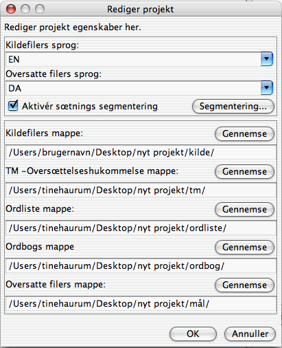
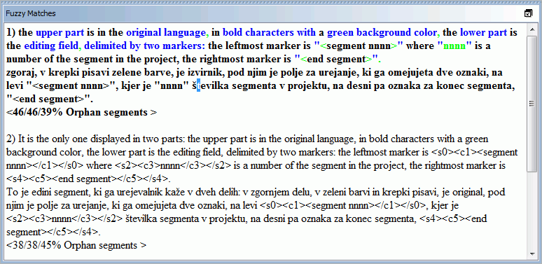

Denne vejledning beskriver kun de grundlœggende funktioner. Det anbefales alle brugere at læse brugervejledningen for at blive bekendt med alle OmegaTs funktioner. Genveje beskrevet her bruger "Ctrl + tast" konventionen; Mac-brugere bør læse "cmd+tast" i stedet, "cmd" tasten har enten har et "cmd" mœrke eller et æblemærke på Apple-tastaturer.
OmegaT skærmen består af et vindue, delt i tre dele. Hver del kan ændres i størrelse ved hjælp af musen. I venstre side er Redigering, hvor du skriver din oversættelse. Øverst til højre, ses match vinduet, hvor matcher fra oversættelseshukommelse vises. Under dette er et ordliste vindue, hvor ordliste match vil blive vist.
I redigerings-vinduet viser OmegaT kildeteksten segmenteret (opdelt) i sætninger (eller afsnit). Disse segmenter oversættes et efter et. Når du går fra segment til segment bliver dine oversættelser automatisk registreret i en oversættelseshukommelse. Når alle segmenter er blevet oversat (eller når du vil) anvender OmegaT oversættelseshukommelse til at generere det oversatte dokument i en "mål" mappe.
OmegaT organiserer din oversættelse projekter. For hvert projekt skaber OmegaT et sæt mapper som bruges til at gemme kildedokumenterne der skal oversættes, ordlisterne du måtte ønske at bruge og de oversættelseshukommelser du eventuelt ønsker at bruge. OmegaT skaber også en "mål" mappe til de oversatte dokumenter.
Gå til Projekt → Nyt... fra menuen.
Naviger til den mappe, hvor du ønsker at gemme projektfilerne, og indtast et navn for oversættelseprojektet. Dette navn bliver også navnet på projektmappen; alle projektfiler vil blive gemt i denne mappe eller undermapper.
OmegaT vil bede dig om at acceptere eller ændre de oprettede projektmapper ved hjælp af dialogboksen nedenfor:

Du kan blot acceptere placeringen af undermapperne, men sørg først for at kilde- og målsprogkoder er korrekte. Vælg den sprogkode (2 bogstaver) eller sprog- og regionkode (2 + 2 bogstaver) fra rullemenuen, eller skriv dem manuelt (sprogkoden kan være 2 eller 3 bogstaver). Noter dig placeringen af målsprog undermappen (for dine oversatte dokumenter). Hvis du vil have OmegaT til segmentere i sætninger i stedet for afsnit, er det en god ide at dobbelt-tjekke reglerne om segmentering.
Når du klikker på OK for at acceptere projektets indstillinger, vil OmegaT bede dig om at vælge kildedokumentet til import. Du kan importere individuelle filer, eller du kan importere hele mappetræer (med alle filer i alle undermapper). Hvis du ved et uheld har importeret de forkerte dokumenter, eller for mange dokumenter, kan du blot fjerne dem fra kildemappen i dit OmegaT projekt (ved hjælp af dit systems filhåndtering, for eksempel).
Hvis du vil se listen over filer, der skal oversættes, gå til Projekt filer vindue (Menu: Projekt → Projekt filer...), hvis det ikke åbnede automatisk. Hvis du var nød til at ændre indholdet af kildemappen, skal du huske at genindlæse projektet før du begynder arbejdet (Menu:Projekt → genindlœs). OmegaT åbner automatisk den første fil i projekt listen. Husk: OmegaT kan kun oversætte filer i formater vist nedenfor, hvis de passer til reglerne der er defineret i filfiltrerne. Alle andre filer vil blive ignoreret.
Når du har defineret projektet og de filer, der skal oversættes, vil OmegaT åbne den første kildefil i redigering. Det første segment er fremhævet med grønt; en kopi af kildeteksten er vist under det, i "mål feltet". (Nu er al tekst uden for målfeltet beskyttet og kan ikke ændres.) Du skal skrive din oversættelse mellem disse tags <segment 0001> og <segment slut>, dermed overskriver du kildeteksten. Tast "ENTER" for at gå videre til nœste segment. Bemærk:
Du kan ændre opsætningen af redigerings feltet (for eksempel til at vise eller ikke vise kildeteksten, fremhæve den oversatte tekst osv.) i hovedmenuen under Vis.
Når du trykker på " ENTER ", sker der flere ting usynligt: OmegaT tilføjer segment parret (kilde segmentet og oversættelsen) til oversættelseshukommelsen og oversætter også automatisk alle andre identiske segmenter der findes i de andre projekt filer. Der bliver også scannet i oversættelseshukommelsen og ordlisterne efter matcher for det næste uoversatte segment.
Hvis OmegaT finder nogle fuzzy matcher (30% eller derover) for det næste segment i oversættelseshukommelsen, vises det i match vinduet. Den første match er automatisk udvalgt på forhånd i match vinduet.
Indsœt oversættelseshukommelse matcher fra match vinduet i mål feltet ved hjœlp af tastaturgenveje:
Ctrl+I eller œble+1 for at indsœtte den på forhånd valgte match ved markørens position, eller...Ctrl+R eller œble+r for at overskrive hele segmentet med den forhåndsvalgte match.Hvis flere matcher er fundet, og du foretrækker ikke at bruge den på forhånd valgte match:
Ctrl +2 for nummer 2 match vist, Ctrl 3 for nummer 3, osv.Ctrl+I eller Ctrl+R genvejene som vist ovenfor.(Du kan indstille OmegaT til automatisk at indsætte den første match, over en specificeret match procent, i mål feltet når segmentet åbnes. Lav denne indstilling ved hjœlp af Funktioner → redigerings adfœrd...)
Matchende ord fra ordlister og ordbøger, som du har inkluderet i projektet, vil blive vist som reference i ordliste og ordbogs sektioner.
OmegaT leverer en effektiv række af søgefunktioner. Fremkald søgevinduet med Ctrl+F og indtast ord eller udtryk du ønsker at søge i søgefeltet. Alternativt kan du vælge et ord eller en sætning i redigerings feltet (i målteksten af det aktive segment) og tast Ctrl + F . Ordet eller sætningen bliver så automatisk skrevet i "søg efter" feltet.
I Google oversætter ruden, vil du automatisk få et forslag til oversættelse af det aktuelle segment. Du kan indsætte det med Ctrl + M i mål segmentet.
Når du har oversat alle segmenter (eller tidligere, hvis du ønsker det), vil OmegaT opdatere målsprogs dokumentet ved hjælp af oversættelser gemt i oversættelseshukommelsen. For at gøre dette: vœlg Projekt → Opret oversatte dokumenter fra menuen. OmegaT bygger oversatte versioner af alle de oversætbare dokumenter i projektets kildemappe, uanset om de er fuldt oversat. De helt eller delvist oversatte filer vil blive gemt i projektets målmappe. Når du er klar til at afslutte din oversættelse: åbn målfiler i deres tilhørende applikationer (browser, tekstbehandling ...) for at kontrollere indhold og formatering af din oversættelse. Du kan derefter vende tilbage til OmegaT og foretage de nødvendige korrektioner, glem ikke at genskabe de oversatte dokumenter.
OmegaT sikrer, at formateringen af kildedokumenter (fed, kursiv osv.) ikke går tabt ved at markere det med specielle tags. OmegaT tags er sammensat af et eller flere bogstaver efterfulgt af et eller flere cifre, ved hjælp af "/"-tegnet for lukning (for eksempel: <f0> , </f0><br> , </s2> osv.). Du skal håndtere disse tags med omhu og sikre at de indgår korrekt i målsegmentet (se tag operationer ).
I disse eksempler har vi fremhævet tags, for at gøre dem lettere at se, men i OmegaT vil de ikke være fremhævet. HTML-tags, fremhævet i blå , vil blive ignoreret af OmegaT, da de omslutter segmentet fuldtud. Tags, fremhævet nedenfor i grønt er nødt til at blive behandlet af OmegaT fordi de er inden for segmentet. Her er et eksempel på et segment i HTML:
<p>En anden skœrm skrifttype kan vœlges via <b>skœrm skrifttype</b> dialogboks. Åbn via <i>Indstillinger</i> → <i>skœrm skrifttype...</i> menupunkt. Skrifttype og størrelse kan ændres fra dialogboksen. </p>
Her ses hvordan OmegaT vil vise det; med oversættelsen på afrikaans:
Når OmegaT har skabt det oversatte dokument, vil HTML-se sådan ud:

OmegaT opdager ikke automatisk tag fejl i det oversatte dokument. Før du afleverer dokumentet til din kunde, bør du derfor kontrollere dine tags for fejl.
Vœlg Vœrktøjer → Validér Tags fra menuen. En tabel viser de segmenter, hvor kilde- og mål-tags ikke matcher. Klik på segment nummeret. Du vil automatisk blive taget til det tvivlsomme segment i redigering, hvorfra du kan rette tagget. Tast Enter for at validere det korrigerede segment og kontroller korrektionen ved igen at trykke Control-T.
I nogle tilfælde kan tag-fejl forhindre et dokument i at åbne. Du bør derfor sikre, at du har løst alle tag-fejl, inden du opretter de oversatte filer. Endelig bør du altid dobbelt-tjekke den endelige formatering ved at åbne det oversatte dokument i dets associerede fremviser eller editor.
I nogle programmerings sprog (fx PHP, C) bruges specielle tags som pladsholdere i strenge der bruges i kombination med printf-funktion. OmegaT kan registrere og validere disse tags, hvis du tillader det. Vœlg Vœrktøjer → Validér tags fra menuen. Du kan vælge mellem enkel og komplet validering. Ved enkel validering er kun simple varianter af de mulige pladsholder værdier brugt. Dette er nyttigt, hvis kildekoden ikke indeholder de mere ekspressive og komplekse pladsholdere og du får en masse falske positiver.